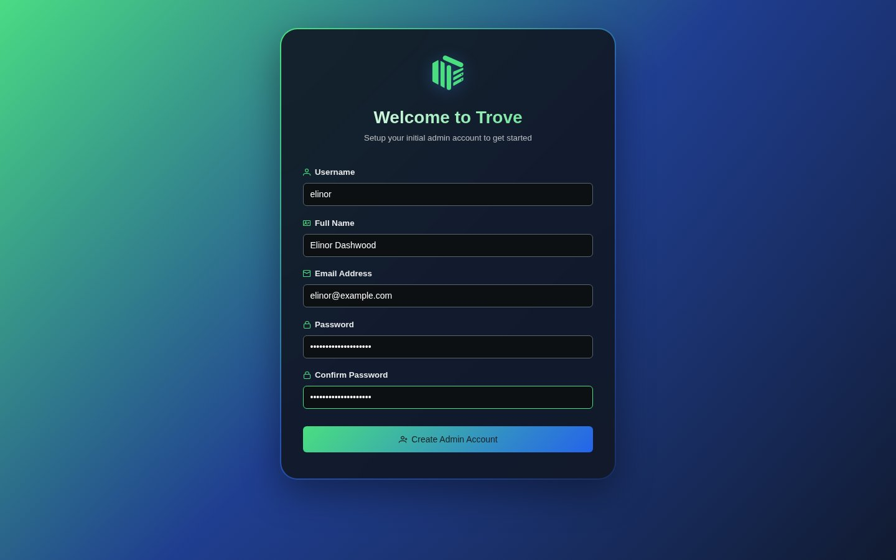
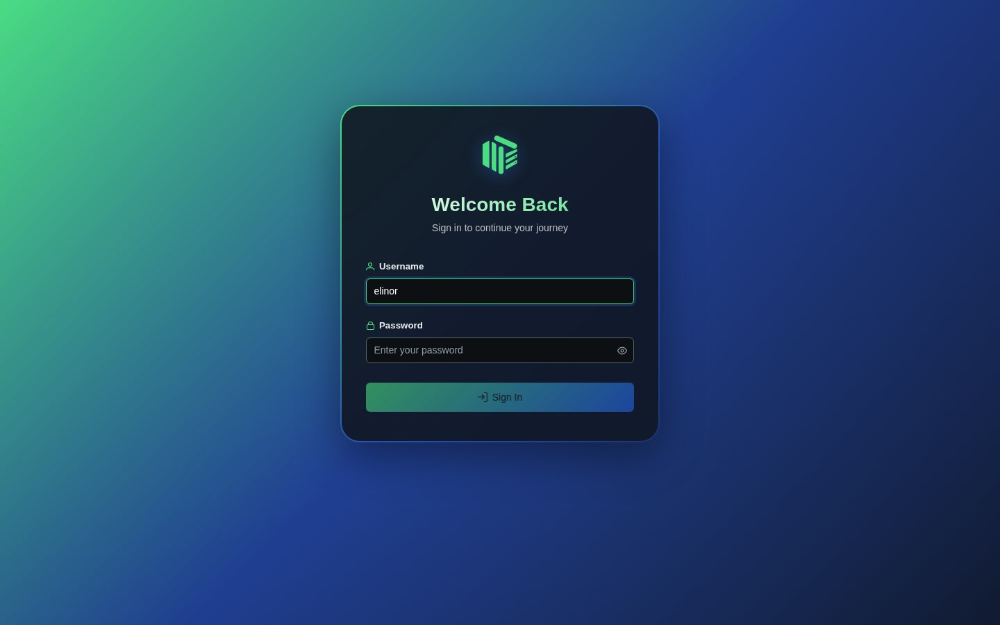
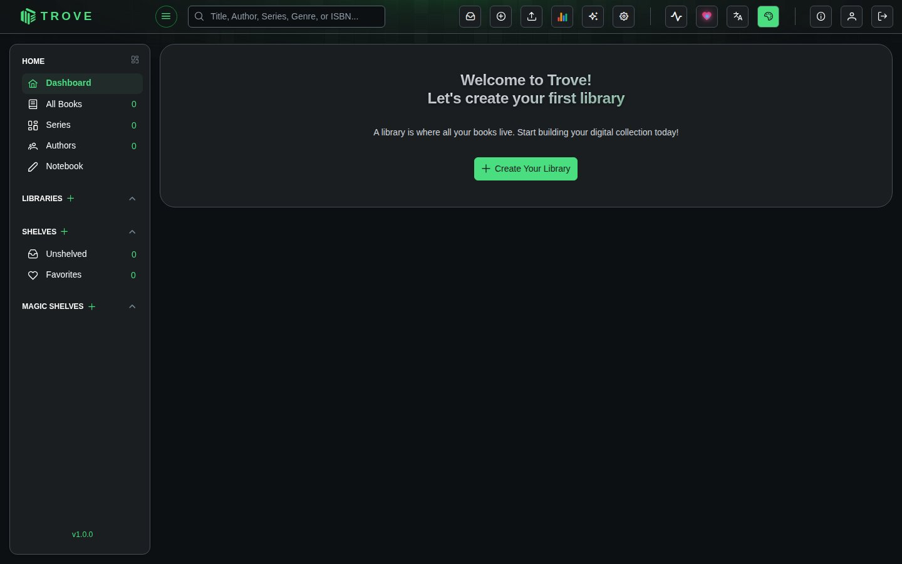

Admin account
The first time you open Trove, it asks you to create the administrator account. This only happens once.
Create the account
Open Trove in your browser (http://your-server:6060) and fill in the form:

| Field | Notes |
|---|---|
| Username | What you'll sign in with |
| Full name | Shown in the app |
| Must be a valid address | |
| Password | At least 8 characters |
| Confirm password | Must match |
Click Create Admin Account.
Sign in
Trove takes you to the sign-in page. Use the username and password you just chose.

The empty dashboard
With no libraries yet, the dashboard invites you to create one.

Click Create Your Library and carry on with Your first library.